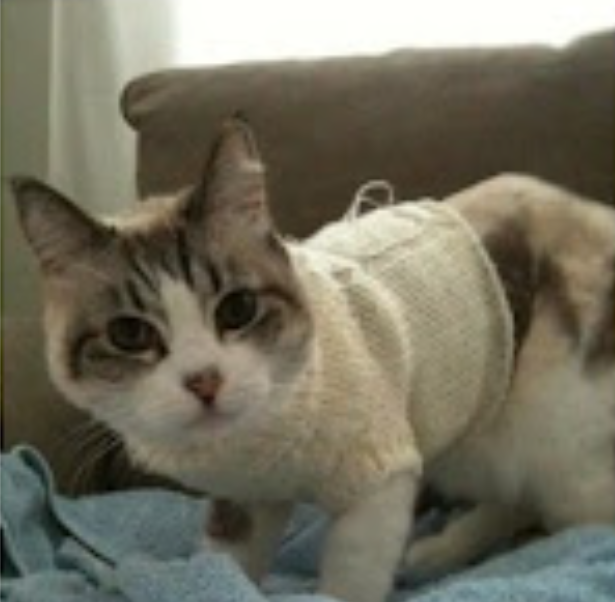

Pochi the Cat
Introduction

Pochi was adopted from an animal shelter and now resides in Seattle, WA, where she runs a small but successful web page design business exclusively for cat clients.
Profile
- favorite food - smoked salmon
- hobbies - watching fishing on ESPN, snaking on garden flowers, monitoring the apartment parking lot
- hidden talent - Karaoke
Links